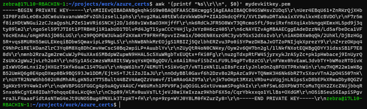
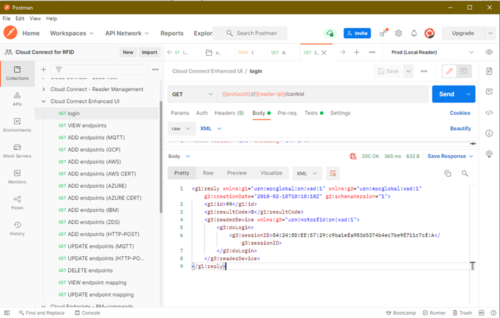
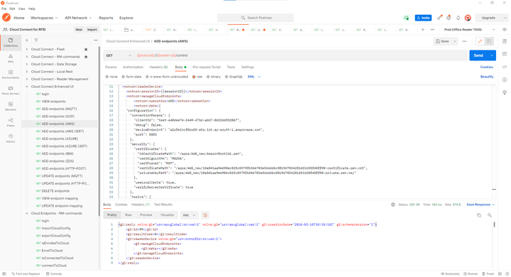
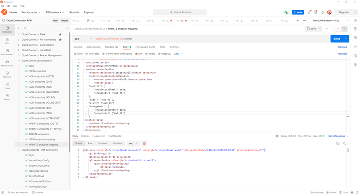
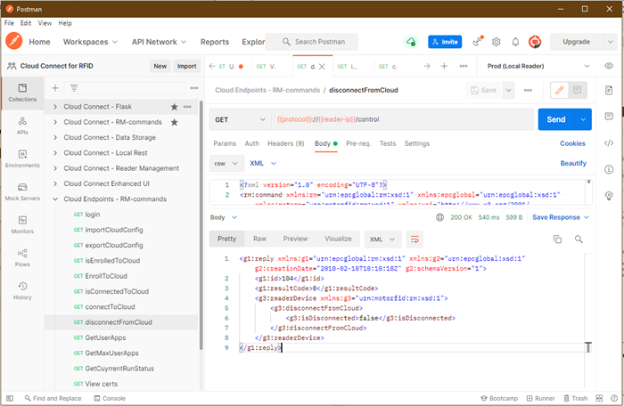
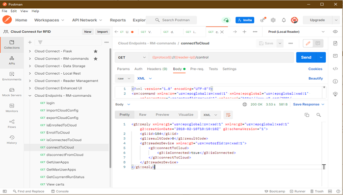

Configure device using RM Interface¶
This page guides user to configure reader using Reader Management Interface.
Important
This guide uses Postman Tool for sending API calls to reader.
Import Certificates and Generate Endpoint Configuration¶
Import AWS device certificates downloaded into reader.
Method-1: Using SCP.
Copy
<id>-certificate.pem.crt,<id>-private.pem.keyandAmazonRootCA1.pemcreated in AWS IoT Core Setup into reader. (copy to desired folder inside/apps/).Method-2: Using reader certificate webpage.
Create
PFXfile from certificate generated in AWS IoT Core Setup.Import Certificates into reader using certificate page.
Method-3: pass certificates contents along with
Endpoint Config.
Create AWS Endpoint JSON object (when used
Method-1orMethod-2for importing certificates).
Edit Example AWS endpoint JOSN object shown below.
{ "type": "AWS", "name": "AWS #1", "description": "AWS Demo", "configuration": { "connectionParams": { "clientId": "test-12345", "debug": false, "deviceEndpoint": "{deviceEndpoint}", "port": 8883 }, "security": { "useLocalCerts": true, "certificates": { "CACertificatePath": "{CACertificatePath}", "certAlgorithm": "RS256", "certFormat": "PEM", "certificatePath": "{certificatePath}", "privateKeyPath": "{privateKeyPath}" }, "verifyServerCertificate": true }, "topics": { "control": { "command": { "qos": 0, "retain": false, "topic": "commands" }, "response": { "qos": 0, "retain": false, "topic": "responses" } }, "management": { "command": { "qos": 0, "retain": false, "topic": "commands" }, "response": { "qos": 0, "retain": false, "topic": "responses" } }, "managementEvents": { "qos": 0, "retain": false, "topic": "asynevents" }, "tagEvents": { "qos": 0, "retain": false, "topic": "events" } } } }
Replace
{deviceEndpoint}string withEndpoint URLcopied in AWS IoT Core Setup.Replace
{certificatePath}string with path ofpublic certificatedownloaded.
If certificates are imported using Method-1: Replace with
"/apps/<id>-crtificate.pem.crt"If certificates are imported using Method-2: Replace with
"/readerConfig/keystore/<id>-certificate.pem.crt"Replace
{PrivateKeyPath}string with path ofprivate keydownloaded.
If certificates are imported using Method-1: Replace with
"/apps/<id>-private.pem.key".If certificates are imported using Method-2: Replace with
"/readerConfig/keystore/<id>-private.pem.key".Replace
{CACertificatePath}string with path ofroot CAdownloaded.
If certificates are imported using Method-1: Replace with
/apps/AmazonRootCA1.pem".If certificates are imported using Method-2: Replace with
"/readerConfig/keystore/AmazonRootCA1.pem".
Create AWS Endpoint JSON object without local certificates (when used
Method-3for importing certificates).
Edit Example AWS endpoint JOSN object shown below.
{ "type": "AWS", "name": "AWS #1", "description": "AWS Demo", "configuration": { "connectionParams": { "clientId": "test-12345", "debug": false, "deviceEndpoint": "{deviceEndpoint}", "port": 8883 }, "security": { "useLocalCerts": false, "certificates": { "certificateContent": "{certificateContent}", "certAlgorithm": "RS256", "certFormat": "PEM", "privateKeyContent": "{privateKeyContent}", "CACertificateContent": "{CACertificateContent}" }, "verifyServerCertificate": true }, "topics": { "control": { "command": { "qos": 0, "retain": false, "topic": "commands" }, "response": { "qos": 0, "retain": false, "topic": "responses" } }, "management": { "command": { "qos": 0, "retain": false, "topic": "commands" }, "response": { "qos": 0, "retain": false, "topic": "responses" } }, "managementEvents": { "qos": 0, "retain": false, "topic": "asynevents" }, "tagEvents": { "qos": 0, "retain": false, "topic": "events" } } } }
Replace
{deviceEndpoint}withEndpoint URLcopied from AWS IoT Core Setup.Replace
{certificateContent}with content of<id>-certificate.pem.crt.Replace
{privateKeyContent}with content of<id>-private.pem.key.Replace
{CACertificateContent}with content ofAmazonRootCA1.pem.In certificate content replace newline
\\ncharacter with\\r\\ncharacters as shown below for proper JSON object.
Note
tagEventsReader uses this topic to send tag read events.
managementEventsReader uses this topic to send asynchronous events like heartbeats, GPI, userapp, errors and warnings.
commandReader will subscribe to this topic and listening for commands from cloud.
responseReader uses this topic to send responses to commands.
Import Configuration into Reader¶
Download and import postman collections Cloud Connect Enhanced UI.postman_collection.json and Cloud Connect - RM-commands.postman_collection.json
Create an environment variables
protocol(http/https) andreader-ip(10.17.231.7).Execute
LoginAPI.Important
change
usernameandpasswordfield in the body with readers username and password configured.Goto
ADD endpoint (AWS) APIand replace the JSON object between<motorm:data> </motorm:data>with the AWS Endpoint JSON object created in Import Certificates and Generate Endpoint Configuration.The response
200 OKindicate the endpoint got added successfully.Status other than
200indicate error and response contain the failure reason and checkreader syslogto get more info on error.
Create Endpoint Mapping for AWS.
Goto
UPDATE endpoint mapping APIand edit control, data, event, and management endpoints to the name used in AWS endpoint JSON object.
Important
Reader is configured to AWS endpoint for all the interfaces.
The response
200 OKindicate the endpoint got added successfully.Status other than
200indicate error and response contain the failure reason and check reader syslog to get more info on error.
Connect to Cloud¶
Goto
isEnrolledToCloudand check if reader is enrolled for IoT connect or not.
If device is not enrolled currently, Send
EnrollToCloud API.
If device is already enrolled, Send
disconnectFromCloud APIandconnectToCloud API.
disconnectFromCloud API:
connectToCloud API:
{kind=link}